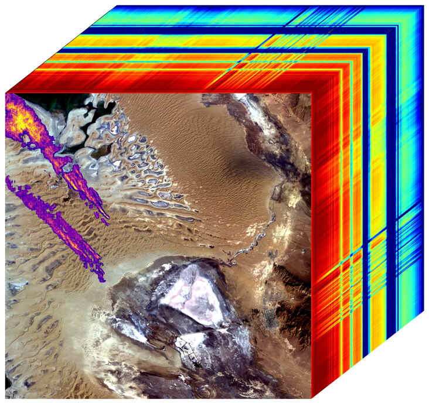

Greenhouse Gases
Greenhouse gas mapping Methane and carbon dioxide have distinct absorption features in the shortwave infrared (1800-2500nm) that permit the detection and mapping of point source greenhouse gas emissions with EMIT data. Identifying strong emission sources offers the potential to improve our understanding of anthropogenic emissions and to mitigate those emissions. For example, oil & gas operators can locate and fix leaks that are both expensive and environmentally damaging, providing a win-win opportunity.
Other sectors could use this information to identify opportunities for methane capture for either flaring or conversion to fuel resources. (The cube shows methane plumes (purple, orange, yellow) over Turkmenistan. The rainbow colors are the spectral fingerprints from corresponding locations in the front image.)
EMIT and Greenhouse gas emissions: “Reining in methane emissions is key to limiting global warming. This exciting new development will not only help researchers better pinpoint where methane leaks are coming from, but also provide insight on how they can be addressed – quickly,” said NASA Administrator Bill Nelson. “The International Space Station and NASA’s more than two dozen satellites and instruments in space have long been invaluable in determining changes to the Earth’s climate. EMIT is proving to be a critical tool in our toolbox to measure this potent greenhouse gas – and stop it at the source.”